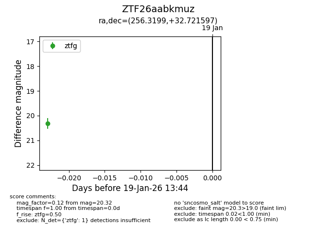
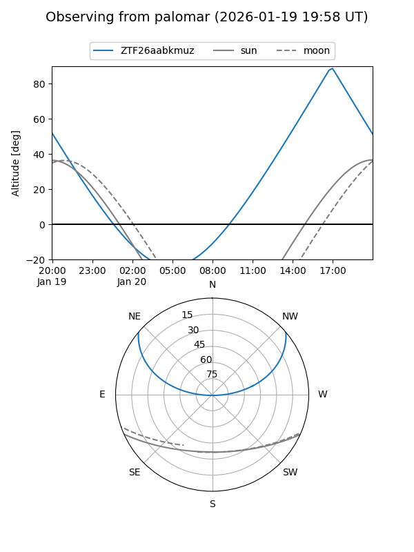

ZTF26aabkmuz
Target ZTF26aabkmuz at 2026-01-19 13:46
Aliases and brokers:
FINK: link
Lasair: link
ALeRCE: link
alt names
ZTF26aabkmuz (ztf,fink_ztf)
Coordinates:
equatorial (ra, dec) = 256.3199,+32.72160
equatorial (HMS+DMS) = 17:05:16.78,+32:43:17.75
galactic (l, b) = (55.2967,+35.52372)
Flags:
Photometry:
last ztfg=20.32
1 ztfg detections
Lightcurve

Visibility


Additional plots